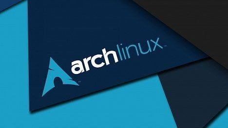

Arch Linux es una distribución Linux para computadoras x86-644 orientada a usuarios avanzados. Se compone en su mayor parte de software libre y de código abierto (FOSS) y apoya la participación comunitaria. El enfoque de diseño del equipo de desarrollo, sigue el Principio KISS como lineamiento general, y se enfoca en la elegancia, exactitud, minimalismo y simplicidad, y espera que el usuario esté dispuesto a realizar un esfuerzo por entender la operación del sistema. El gestor de paquetes escrito específicamente para Arch, llamado Pacman, es usado para instalar, eliminar y actualizar paquetes. Arch Linux utiliza un modelo de rolling release, de tal manera que una actualización regular del sistema operativo es todo lo que se necesita para obtener la última versión del software; las imágenes de instalación son simplemente «capturas» de los principales componentes del sistema. Arch Linux define simplicidad como «…una ligera estructura base sin agregados innecesarios, modificaciones, o complicaciones, que permite a un usuario individual modelar el sistema de acuerdo a sus propias necesidades». La simplicidad de su estructura no implica sencillez en su manejo.
